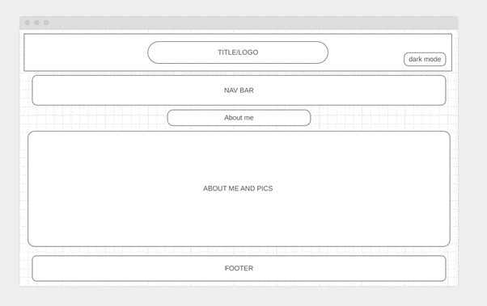

Introduction
How did you approach the subject? What does your site say about future you?
In the report, my portfolio shows the research, plan, designs, and code work put in to develop my portfolio with ideas of the design of webpages that is going to be executed with images and colours that fits the purpose of being accessibility for people to view with ease. I have made a use of my skill to plan and build website from scratch and apply other libraries that is already made to use to make a functionable and responsive. This website is approached by having to use my skills to publish myself to put my details online. This site will be published about me summarizing my work and project that I have worked to improve my services and show what I can provide the employer and organisation to know about myself.
Background
Who is your audience?
The audience for my portfolio is for people that wants to know about my skills and knowledge in what I specialise to fulfil their requirement in achieving excellent results. There are other people that need to know about the portfolio for reference.
- Throughts about Portfolio
There was online portfolio that made me inspire and get to know the details, one such as website is https://jacekjeznach.com/ this portfolio was responsive and colour scheme was well used in area that was not affect my vision by keeping it simple. My thoughts about this website are that it looks professional but when looking at the codes it is inline style that have script and the other html tags used for building it. There were less comments on HTML and CSS files that do not make the other developer understand what the files does but it looks like it is using other libraries that is pre-made to run using jQuery. This website is I mentioned above I am referring to its style and colour contrasts has other sides that needs to be evaluate when the two-tone colour is mixed accessibility was not counted. For instance, the colour for the logo was not properly contrasted with the two when having double tone, one being red and other being cyan it was not suitable for colour-blindness. Another online portfolio, that made think surprised with the interaction of the functionality was Robby Leonardi | hey@rleonardi.com this website is not secure but the work that was put into making the users explore the website was exciting with colour contrast not being simple giving all the details. There was less amount of HTML used as it was for connect the browser by the CSS and JS was advance for knowing the function with this making awesome.
Resource on portfolio creation
Planning
Accessibility for my website is made by having the navigation responsive to the screen size.
Many websites need to be responsive to user as website can be access from different devices and depending on the layout of the website, pages will load as per the creation of the developer making it suitable for using on different screen size.
Furthermore, accessibility for website is used for making use for all, if the user needs to read some news with speech recognition that will help people having to understand the words for blind people it can be useful, and people learning new language and need to understand the words it is useful. Colour is something that need to be planned to sensible when using it on the website as some colour mix and having similar contrast and people find it hard to read the text or to recognise the website. For instance, colour such as red and green makes it unpleasant and hard to read the text for people with colour-blindness as they will find it another colour contrast red and green into light shade of these colour making it look like grey shade as it will be difficult. So, my website I have used blue with hover effect as light blue when its light mode is on and orange and brown when the dark mode is on. The opposite colour contrast for people to read and simple to understand the website.
How have you made the site easy to navigate?
I have made the navigate simple on my website with fixed inline navigation that follows 4 pages. The title is mentioned on each page to know which page the user is currently using and simple rather than having a complex navigation that will not help the user to navigate my information that needs to be seen.
Implementation
Learning
The things that I learnt from coding my website was the layout must be simple and understand to use the colours that will be helpful for people with colour-blindness as of designing the website. Colours that I have chosen maybe change colour for tritanopia user, so I have used blue and orange for dark mode as it will change the colour for tritanopia as red and cyan making it totally different colour. [1] There are many things I learnt using CSS and JavaScript as well. Making @media gave me ideas to implement more style to each elements of text to make a different output for a website. The style was simple to use but knowing each element can get complex to edit as developer output is to edit as per the plan but there will be error that effect on other part of text making it different ways to edit to get a result as it was expected.
Libraries and other resources
-
These are libraries that I have used to achieve the website that needs to be functionable to run.
Evaluation
What worked well
-
In my website, I had managed to get the dark and light mode turn off and on when it was clicked by the user if requested with a button on the top as per the wireframe build.
The CSS and JavaScript were to be used to achieve this task into my website.
There is another JavaScript for Colour scheme command used for making this possible when the user toggle on.
It was challenging to the graph diagram to make it possible with different section within the text using media of the CSS file with colours had to be picked and having chose the opposite colours
that can be suitable for light and dark mode colour as it must be noticeable colours used on the website.
What might be improved
-
The navigation bar needs to be improved by having the responsive when the screen size changes, and this will be investigated to make sure every device can view.
The navigation needs a toggle which follows on a list drop down menu that will help the mobile user and develop into a better way to see the website,
because it does not look crowded with so many items on the small size.
I will look into this more detail and work on the website making it better by adding more information to be useful for future use to show a website build from scratch.
Also, I will add advance JavaScript and other libraries to can devlop better and have more attractive and interactive.
Appendix
Site Map
-
This is a simple sitemap I have added to show the pages I created are simple to browser through the website.
Wireframes
-
These are the designs that gives an idea how the webpage is planned to layout for each page
that needs to be structured to guide for making an improved version with colours and styles.
I had planned to have this designed but I had some changes that need to be added for information to make it look attractive.
Wireframe before the building
Wireframe after the building
Validator reports
-
On validator reports, I have received few errors that needs to be pay attention on developing it better.
For each page it has the same error as it belongs to the footer that links to my social media.
It shows the use of li tags not allowed as child of elements div tags.
I wanted to follow this way because the icons had bullet points and
I needed it to be inline style without bullet points as this worked out when
I used li tags as CSS was not recognize the style.
References
-
[1] Author - Giedrė . Vaičiulaitytė, Title - 'You’ll Be Amazed How People With Color Blindness See The World', Year Published - 2018. [Online].
Available: https://www.boredpanda.com/different-types-color-blindness-photos/?utm_source=bing&utm_medium=organic&utm_campaign=organic
URL. [Accessed: 10- Jan- 2020].